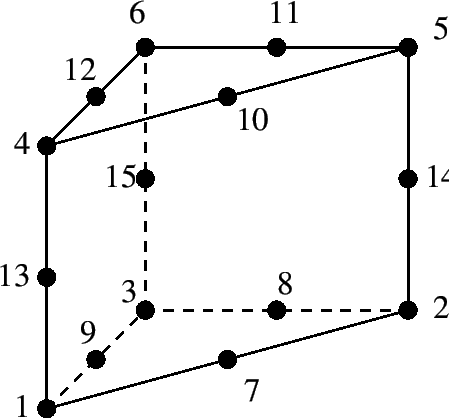

Keyword type: step
This option is used to print selected nodal variables in filejobname.dat. The following variables can beselected:
The external forces are the sum ofthe reaction forces, concentrated loads (*CLOAD) and distributed loads(*DLOAD) in the node at stake. Only in the absence of concentrated loads inthe node and distributed loads in any element to which the node belongs, theexternal forces reduce to the reaction forces. Forces induced by multiplepoint constraints are not calculated. Since single point constraints definedin transformed coordinates are converted into multiple point constraints inthe global rectangular system, the force in a node in which a SPC is definedin local coordinates are not correctly delivered upon using the RF key incombination with the *NODE PRINT keyword card.
There are six parameters,FREQUENCY, FREQUENCYF, NSET, TOTALS, GLOBAL and TIME POINTS. The parameter NSET isrequired, defining the set of nodes for which the displacements should beprinted. If this card is omitted, no values are printed. Several *NODE PRINTcards can be used within one and the same step.
The parameters FREQUENCY and TIME POINTS are mutually exclusive.
The parameter FREQUENCY is optional, and applies tononlinear calculations where a step can consist of severalincrements. Default is FREQUENCY=1, which indicates that the resultsof all increments will be stored. FREQUENCY=N with N an integerindicates that the results of every Nth increment will be stored. Thefinal results of a step are always stored. If you only want the finalresults, choose N very big. The value of N applies to *OUTPUT,*ELEMENT OUTPUT, *EL FILE, *ELPRINT, *NODE OUTPUT,*NODE FILE, *NODE PRINT,*SECTION PRINT,*CONTACT OUTPUT,*CONTACT FILE and *CONTACT PRINT. If the FREQUENCY parameter is usedfor more than one of these keywords with conflicting values of N, thelast value applies to all. A frequency parameter stays active across several stepsuntil it is overwritten by another FREQUENCY value or the TIME POINTS parameter.
The 3D fluid analogue of FREQUENCY is FREQUENCYF. In coupled calculationsFREQUENCY applies to the thermomechanical output, FREQUENCYF to the 3D fluid output.
The parameter TOTALS only applies to external forces. IfTOTALS=YES the sum of the external forces for the whole node set isprinted in addition to their value for each node in the setseparately. If TOTALS=ONLY is selected the sum is printed but theindividual nodal contributions are not. If TOTALS=NO (default) theindividual contributions are printed, but their sum is not. Notice that thesum is always written in the global rectangular system, irrespective of thevalue of the GLOBAL parameter.
With the optional parameter GLOBAL you tell the program whether you would like theresults in the global rectangular coordinate system or in the local nodalsystem. If an *TRANSFORM card is applied to the node at stake, this card definesthe local system. If no *TRANSFORM card is applied to theelement, the local system coincides with the global rectangularsystem. Default value for the GLOBAL parameter is GLOBAL=NO,which means that the results are stored in the local system. If you prefer theresults in the global system, specify GLOBAL=YES. If the results are stored inthe local system the character 'L' is listed at the end of the line.
With the parameter TIME POINTS a time point sequence can be referenced,defined by a *TIME POINTS keyword. In that case, output will beprovided for all time points of the sequence within the step and additionally at the end ofthe step. No other output will be stored and the FREQUENCY parameter is nottaken into account. Within a step only one time point sequence can be active. If more thanone is specified, the last one defined on any of the keyword cards*NODE FILE, *EL FILE, *NODE PRINT, *EL PRINT or *FACE PRINT will be active. The TIMEPOINTS option should not be used together with the DIRECT option on theprocedure card. The TIME POINTS parameters stays active across several stepsuntil it is replaced by another TIME POINTS value or the FREQUENCY parameter.
The first occurrence of an *NODE PRINT keyword card within a step wipesout all previous nodal variable selections for print output. If no*NODE PRINT card is used within a step the selections of the previousstep apply, if any.
Notice that some of the keys apply to specific domains. For instance, PS and Vcan only be used for 3D fluids, PT and MF only for networks. Furthermore, PTonly makes sense for the vertex nodes of the network elements, whereas MF onlyapplies to the middle nodes of network elements. It is the responsibility ofthe user to make sure that the sets (s)he specifies contain the rightnodes. For nodes not matching the key the printed values are meaningless. If the model contains axisymmetric elements the mass flow applies to asegment of . So for the total flow this value has to be multiplied by180.
First line:
Example: *NODE PRINT,NSET=N1 RF
requests the storage of the reaction forces in the nodes belonging to (node) set N1 in the .dat file.
Example files: beampkin, beamrb.